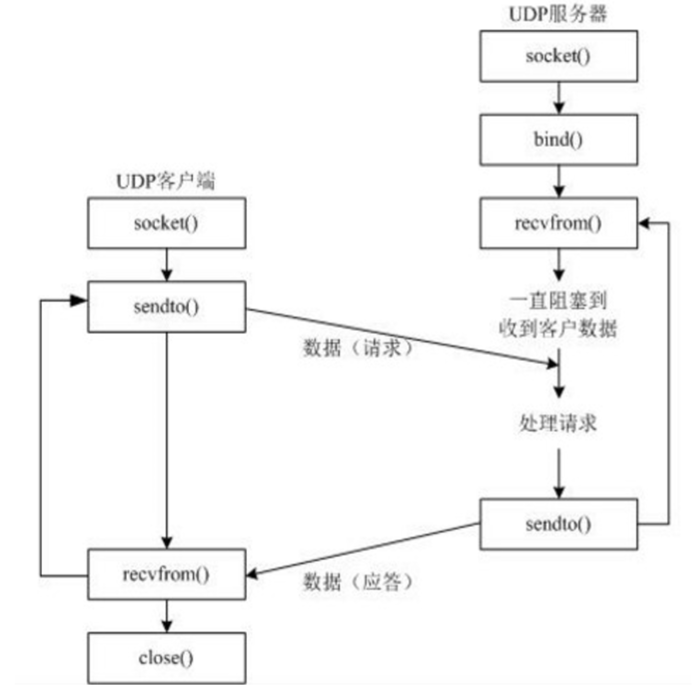

UDP --- 用户数据报协议，是一个无连接的简单的面向数据报的运输层协议。
UDP不提供可靠性，它只是把应用程序传给IP层的数据报发送出去，但是并 不能保证它们能到达目的地。
UDP是一种面向无连接的协议，每个数据报都是一个独立的信息，包括完整 的源地址或目的地址，它在网络上以任何可能的路径传往目的地，因此能否 到达目的地，到达目的地的时间、次序以及内容的正确性都是不能被保证的
UDP适用于语音广播、视频会议等其他的数据业务
UDP通信过程：

UDP通信比较简单
先写一个UDP服务器，一般步骤如下：
1、首先是要创建一个socket套接字：socket()
2、服务器一般是需要一个固定的IP地址和固定端口号，服务器就要绑定这个IP地址和端口号：bind()
3、只有服务器和客户端绑定相同的IP地址，服务器和客户端才可以互相接收数据和发送数据，常理来想，服务器是一只被开启的，也是一直接受数据，所以在接受数据的过程中，我们需要无限循环:recv()
4、如果我们要发送数据给客户端,客户端也需要绑定上面的地址，然后需要调用相应的函数sendto()
import socket
# UDP
# 创建一个服务器socket套接字
server_socket = socket.socket(socket.AF_INET, socket.SOCK_DGRAM)
# 服务器的IP地址和端口号
address = ("127.0.0.1", 9999)
# 服务器绑定地址
server_socket.bind(address)
data = server_socket.recv(2048).decode("UTF-8")
# 数据处理，这里打印出来端
print("服务器接受的数据：", data) # 服务器接受的数据：我是一个客户端若想服务器接受数据，就要写UDP客户端程序了
import socket
# 客户端需要创建一个套接字
client_socket = socket.socket(socket.AF_INET, socket.SOCK_DGRAM)
# 客户端需要连接服务器，必须先知道服务器的IP地址和端口号
address = ("127.0.0.1", 9999)
# 连接服务器
client_socket.connect(address)
# 这个数据是将要发送的数据
data = "我是一个客户端"
client_socket.sendto(data.encode("UTF-8"), address)
1. udp是TCP/IP协议族中的一种协议能够完成不同机器上的程序间的数据通 信
2. udp服务器、客户端
udp的服务器和客户端的区分：往往是通过请求服务和提供服务来进行区分
请求服务的一方称为：客户端
提供服务的一方称为：服务器
3. udp绑定问题
一般情况下，服务器端，需要绑定端口，目的是为了让其他的客户端能够正确发送 到此进程
客户端，一般不需要绑定，而是让操作系统随机分配，这样就不会因为需要绑定的 端口被占用而导致程序无法运行的情